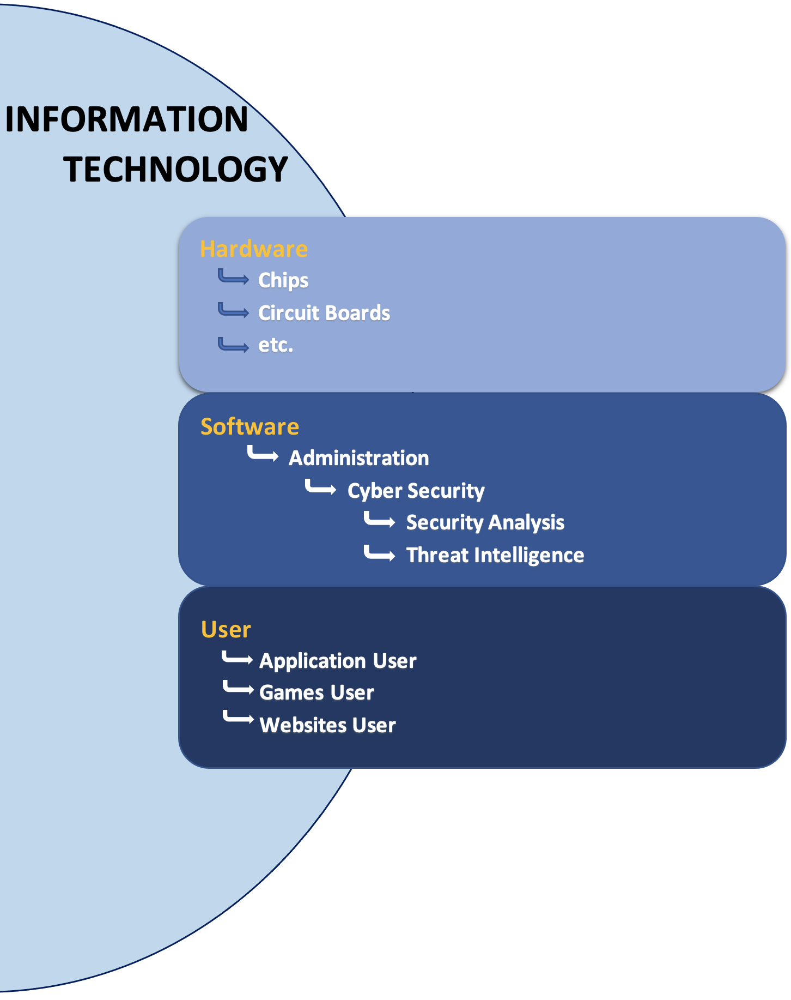

The Security Rabbit Hole - A Blog for Noobs
The section will cover a high overview of Information Technology (IT) split into 3 different categories and where Security fits best.
The three differentiating categories within IT are:
- Hardware
- Software
- User
Although a lot of future blog post will cover things in the Software and User Domain, it’s good to know how all these categories fit together.

Hardware Domain
The Hardware Domain consist of physical components that make up items for use within IT. An example if a physical component is something that can be physically touched, held, moved. A mobile phone, computer chip, computer resistors or similar motherboard components, keyboard & mouse, routers, and printers are all examples of physical components that can be physically touched.
Hardware Jobs or commons
Typical easy jobs to obtain with little experience in IT relate to Helpdesk Support, but help desk is not limited to one domain. Some Helpdesk support encompasses all three domains.
Helpdesk Support: Fixing hardware related issues like when a computer won’t turn on.
IT Support: ...
IT Support Specialist: ...
Technology Technician: ...
Fixing
Personal example of Hardware space
There was a time when an LED light stopped working. The issue was a wire connection from the LED light to the battery power source, the wire had been snapped off. Fixing it was as simple as connecting the wire and power box together, but it required some soldering. So, working my magic I was able to solder the wire to the power source and voila, the LED light works again.

Software Domain
The software domain usually involves developing code or making changes to a device (system or software).
An extreme example would be developing an application for a mobile phone or Operating System.
A less extreme example is making a change to a firewall (local system or network firewall) where the firewall has a change in the behavior. Let’s say, something as easy as blocking a website or allowing an application to communicate on a port not previously allowed.
This space is where code is created or changed. Some other examples of code development/change listed below.
Software Application:
- Adobe Photoshop
- The Next “Among Us” game
- Coding in general; C++, Java, Python, etc.
Software Administration:
- Device Firmware
- Computer Operating System
- System Policy Changes
- System configurations & Behavior
Software Jobs or commons
Programmer – Codes all day; and nights, and weekends, and holidays, also coding in dreams.
Web Developer – Makes websites
Analyst – Analyzes data
From experience the Cyber Security umbrella best fits into the system administrations, and that fits in the Software domain.
Personal example of Software space
I was able to configure my printer to work correctly without fail; let me tell you that’s an achievement of its own. I could finally print from home, no longer driving to school for a simple print job.

User Domain
This is where all the fun is, the usage of software; applications, website, streaming, twitter, and Instagram. In general, it’s the usage of an application without changing the behavior of a device or system.
An extreme example, using software to calculate coordinates to launch a space ship to the moon.
A less extreme, using software to design a spaceship.
Ok, a lesser example, using the recording software on a mobile phone to record the space ship launch and edit video for Instagram posting. Give me those like!!!
User Jobs or common
Any: Any Jobs that require the use a computer. For example, a desk job that requires the use of any Software such as Microsoft Word to preform work to something like a Computer forensics investigator
Graphic Designer: Using apps to create/design content suitable for other users to digest.
Personal example of User space
Before Covid, little things like outdoor photography were a joy. When out and about I would take scenery pictures. Before posting pictures online I would touch them up using Adobe Photoshop Software. Although I didn’t have a professional camera, I would Photoshop the heck out of the pictures to make them Magazine ready.
Conclusion
Hardware is the laptop with no operating system installed; and no apps installed.
Software is the operating system and any apps installed on the laptop. This can include software to enable use of wi-fi, sound, graphics.
User space is usage of an applications(app), web-browser, Instagram, Netflix, email, etc.

Subscribe to Blog
Get the latest posts delivered right to your inbox